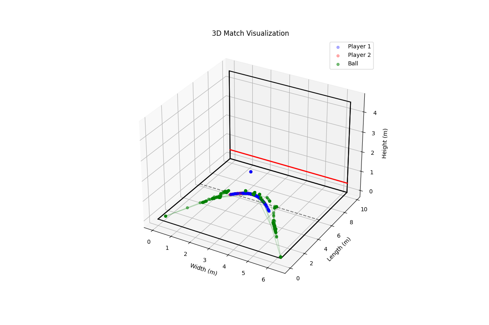
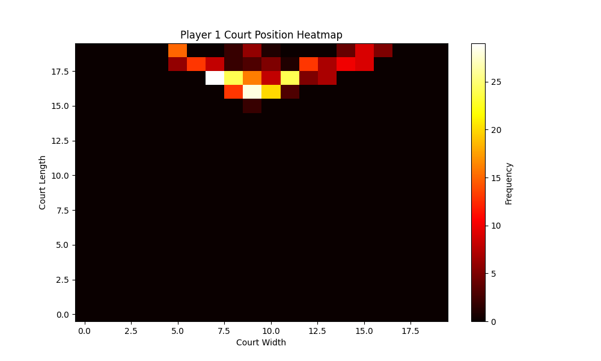
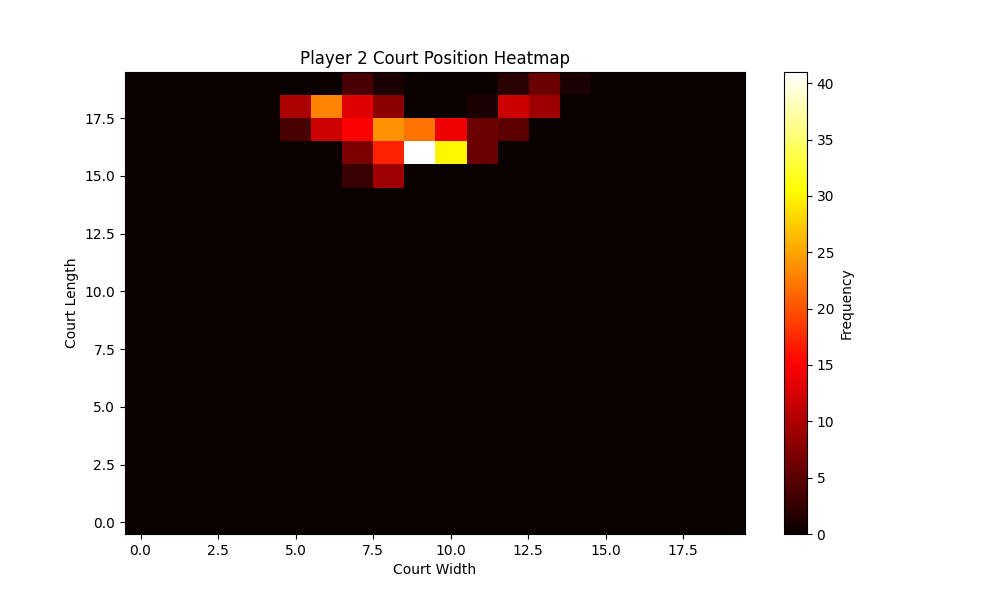
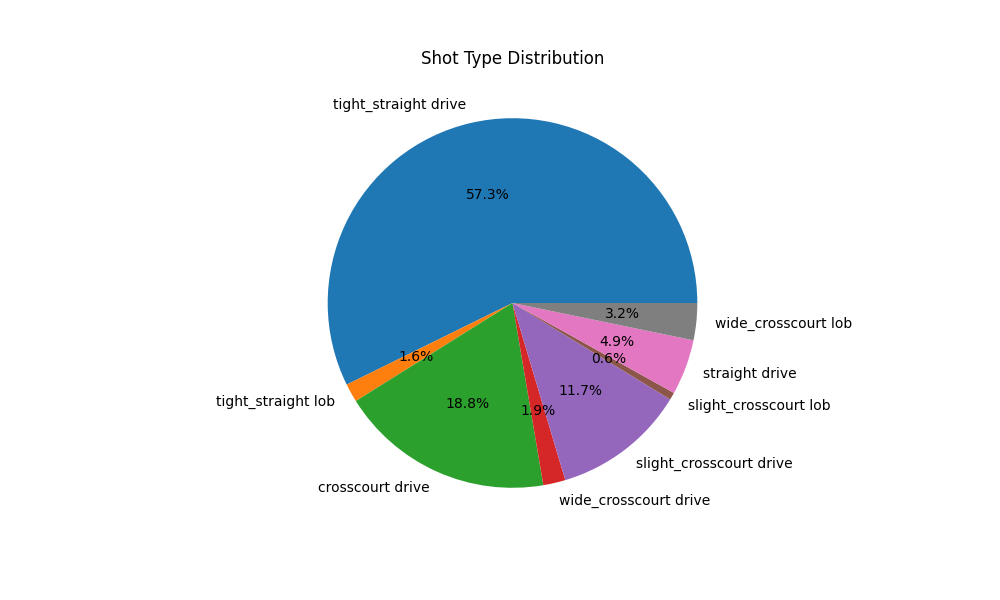
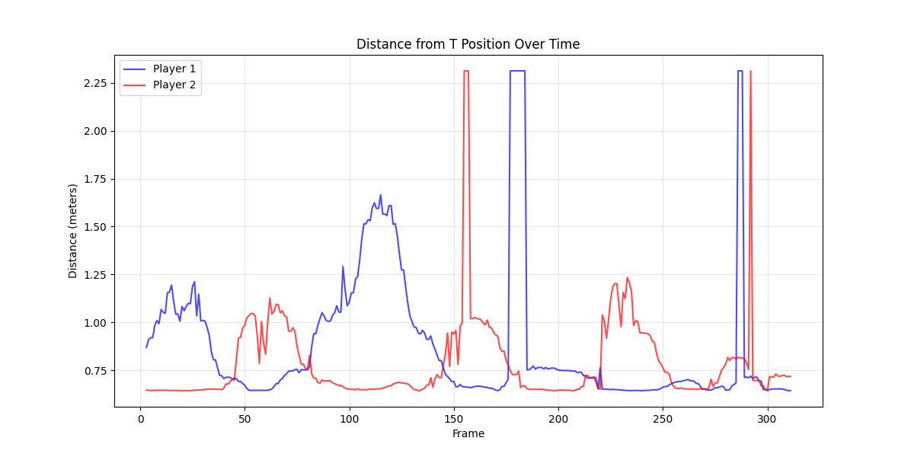

Game Replay

3D Court Visualization

Player Heat Maps
Player 1
Player 2
Shot Type Analysis

Match Breakdown
Shot Distribution
- tight_straight drive: 188 shots (14.6%)
- straight drive: 995 shots (77.3%)
- wide_crosscourt drive: 101 shots (7.8%)
- slight_crosscourt drive: 4 shots (0.3%)
Average Distance from T Position
- Player 1: 0.79 meters
- Player 2: 0.87 meters
Distance from T Position
